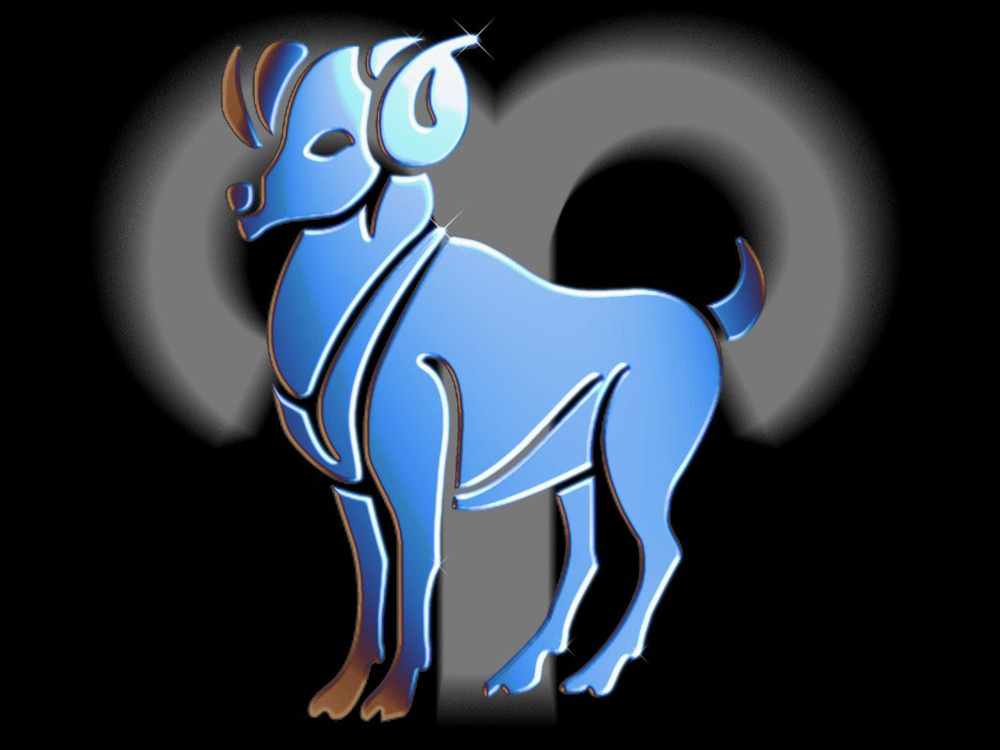

ХАРАКТЕРИСТИКА ЗНАКІВ ЗОДІАКА
Овен

ОВЕН. Людина, народжена під цим знаком Зодіаку, задерта, дратівлива, честолюбна і вперта. Бажання наполягти на своєму може перейти у деспотизм. Погано піддається чужій волі, а жар пристрастей не знає меж, сильна воля не знає межі, діяльний розум штовхає вперед, не побоюючись перепон.
Під цим знаком народжені: Катерина Медічі, Леонардо да Вінчі, Рафаель, Бах, Декарт, Гойя, Гоголь, Золя, Ван Гог, Бісмарк, Гайдн, Гітлер, Чарлі Чаплін.
ТЕЛЕЦЬ

ТЕЛЕЦЬ. Добивається перемоги завдяки працьовитості та незвичайному терпінню. Дуже наполегливий. Не кидає задуманих справ. Рідко слухає поради і може раптом діяти напролом.
Його важко вибити з колії, проте гнів його довгий, він не забуває образ. Допитливий і справедливий.
Сильна воля, прив'язлива і консервативна у поглядах, ревнива.
Під цим знаком народжені: Шекспір, Марія Медічі, Делакруа, Катерина II, Кромвель, Робесп'єр, Бальзак, Брамс, Фрейд, Ленін, Трумен.
БЛИЗНЮКИ

БЛИЗНЮКИ. Найбільш мінливий знак Зодіаку. Люди, народжені під цим сузір'ям, інтелектуальні, часто вміють літературний дар, легко пишуть і набувають різноманітних навичок та вмінь. Вони чарівні, люблять пофліртувати, легко здобувають перемоги, але сімейне життя для них у тягар. Здаються протиріччя їхньої натури ілюзорні, вони просто не виносять одноманітності.
Під цим знаком народжені:Паскаль, Оффенбах, Гріг, Шуман, Пушкін, Гоген, Вагнер, Ю. Андропов
РАК

Вірний і відданий у коханні та сімейному житті. У сім'ї вони знаходять комфорт та самовираження. Чуттєві, легко вразливі, вважають за краще більше давати, ніж брати. У роботі чесні
та надійні. Не люблять нововведень, дотримуються безліч умовностей, Мають загострену інтуїцію, що доходить до містицизму, але приховують це, тому що не люблять виділятися з натовпу.
Під цим знаком народжені: Петрарка, Лафонтен, Мазаріні, Рембрант, Рубенс, Жан-Жак Руссо, Глюк, Кафка, М. Шагал.
ЛЕВ

Звичайно, не всі покликані правити імперією та світом, але народжені під цим знаком мають найбільший шанс до лідерства. Леви покликані не лише керувати, а й любити. Вони глибоко нещасні, якщо їх не схиляються.
Вони добрі та шляхетні, щирі у своїх спонуканнях. Світ для Львова – величезна сцена, часто вони наділені драматичними талантами.
Під цим знаком народжені:Наполеон, А. Дюма (батько), Мопассан, Андре Моруа, Клод Дебюссі, Муссоліні, Генрі Форд, Дж. Рокфеллер.
ДІВА

Інтелігентна, спостережлива, здатна мислити логічно. У Дів аналітичний склад розуму. Кредо Діви: "Якщо варто щось робити, то лише добре".
Поважає і цінує ерудицію, має різнобічні інтереси. Надмірно високий критерій " значимості " , завжди прагнути досконалості.
Багато людей, народжені під цим знаком, досягали високих результатів у вибраній діяльності.
Під цим знаком народжені: Давид, Енгр, Готьє, Рішельє, Толстой, Т. Драйзер, Гете, І. Франко, Ісаак Левітан, Лафайєт, Гретта Гарбо, Софі Лорен.
ТЕРЕЗИ

Життям людей, народжених під цим знаком, керує почуття краси, гармонії та справедливості. Завдяки такту, великодушності та врівноваженості вони завжди знаходяться в оточенні людей. Ці люди рідко мають ворогів і дуже впливають на оточуючих. Відповідальні, мають хороші ділові
якостями.
Під цим знаком народжені:Вергілій, Дідро, Ламартін, Ф. Ліст, Ф. Ніцше, Лермонтов, Уайльд, Махатма Ганді, Ейзенхауер, Юджін О`Ніл, Дж. Гершвін, Сара Бернар, Бріджіт Бордо, М. Мастрояні.
СКОРПІОН

Натура крайнощів та протиріч. Найбільш сильна серед сузір'їв Зодіаку. Безжальна та пристрасна. Її можна любити та ненавидіти. Для
Скорпіонів немає перешкод. Вони аналітики і водночас мають тонку інтуїцію. Енергійні, майже завжди прагнуть успіху.
Саркастичні і мають глибоке, майже містичне розуміння життя. Часто досягають визначних успіхів. Скорпіон – президентський знак:
багато президентів США народжені під цим знаком.
Під цим знаком народжені:Ломоносов, Вольтер, Паганіні, Марія Антуаннета, Достоєвський, Клод Моне, М. Кюрі, Роден, Хлєбніков, Тургенєв, Вів'єн Лі, Пікассо, Р. Кеннеді.
СТРІЛЕЦЬ

Прямі, щирі, чарівні люди. Народжені під цим знаком бувають загальним улюбленцем. Зневажають усілякі обмеження, незалежні. Люблять подорожувати, читати, активні, досягають великих успіхів у роботі.
Під цим знаком народжені:імператриця Єлизавета, Мюссе, Свіфт, Тулуз-Лотрек, Берліоз, Горацій, Марія Стюарт, Разін, Енгельс, Де Голль, Черчілль, Жуков, Карамзін, Луначарський, Плеханов, Кропоткін, Карнегі, Мільтон, Штраус, Дісней, Гарібальді.
КОЗЕРІГ

Практичний та пунктуальний. У роботі досягає успіхів у всіх починаннях. Амбіційний,
Його часто звинувачують у холодності, насправді він любить глибоко, але насилу висловлює свої почуття.
Козероги чесні, прості, вірні та надійні, як сама земля.
Під цим знаком народжені:Жанна д`Арк, Кеплер, Монтеск'є, мадам де Помпадур, Марія дю Плессі, Мольєр, Кіплінг, Жуковський, Шишкін, Перов, Грибоєдов, Міцкевич, Вільсон.
ВОДОЛІЙ

Знак гениев. Боготворят справедливость, обладают широкими
интересами, никогда никого не раздражают. Их идеи оригинальны, у них острый
ум
Під цим знаком народжені:Галилей, Эдисон, Бернс, Байрон, Моцарт, Шуберт,
Линкольн, Моэм, Ж. Верн, Рузвельт, Эдгар По, Чарльз Диккенс, Р. Рейган, Б.
Ельцин
РИБИ

Обладают высокоразвитым чувством интуиции, со спиритуальным
подходом к жизни. Двойственные натуры: с одной стороны честны и
трудолюбивы, методичны, с другой - мечтательны и впечатлительны.
Идеалисты,
ищут гармонию, красоту и мир. Испытывают глубокие разочарования, поняв, что
жизнь далека от совершенства. Предпочитают одиночество и созерцание.
Материальные ценности для Рыбы - ничто по сравнению с духовными. Отдают
предпочтение старому, хорошо известному, не любят новшеств и изменений.
Під цим знаком народжені:Микеланджело, Россини, Шопен, Гендель,
Эйнштейн, Ренуар, Гюго, Карузо, Вашингтон, М. Горбачев, Римский-Корсаков,
Элизабет Тейлор, Стейнбек